Ordesk is a lightweight macOS menu bar app that lets you capture, organize, and instantly restore your entire workspace — across multiple displays.
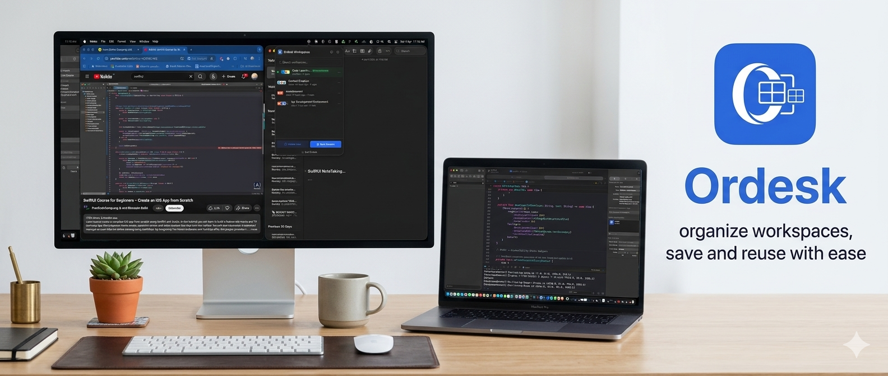
Ordesk is designed for professionals who juggle multiple projects throughout the day. Instead of manually reopening apps and repositioning windows every time you switch contexts, Ordesk saves your exact setup and restores it instantly.
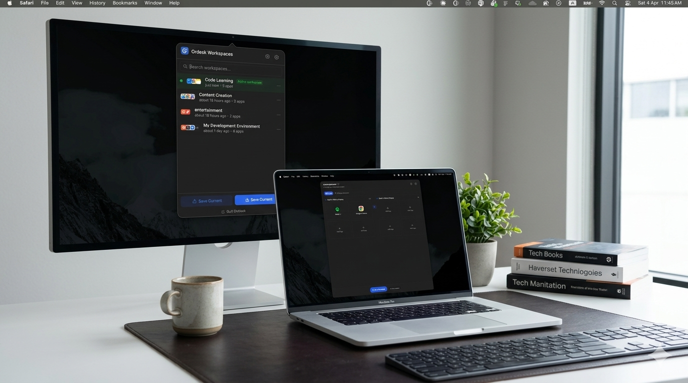
Powerful workspace management that stays out of your way until you need it.
Lightweight and always accessible from your macOS menu bar. No dock clutter.
Automatically detects and supports up to 6 displays for complex setups.
Arrange 1 to 4 windows per display with intelligent auto-positioning.
Save setups without launching them. Build your library of workspaces.
Launch entire workspaces with one click. Switch between projects in seconds.
Close or minimize all non-essential windows with a single action.
Launch instantly with a global hotkey.
Always ready when your Mac starts. Set it once and forget it.
Get started in under a minute. No configuration needed.
Open the apps you need and arrange your windows across your displays.
Click "Save Current" in Ordesk to capture your entire setup instantly.
Switch between saved workspaces with a single click or keyboard shortcut.
Follow along with real screenshots — from opening Ordesk to a perfectly arranged desktop.
Click the Ordesk icon in your macOS menu bar (or press Ctrl + Option + O). A small panel opens showing all your saved workspaces. From here you can search, run, edit, or delete any workspace — the green dot marks the one that is currently active.
Next: click Save Current to turn what's on your screen right now into a workspace.
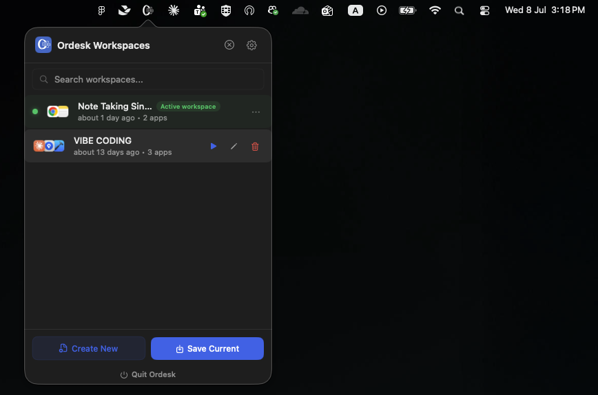
The Save Current Workspace window opens. Give it a clear name like "Design Work" or "Writing". Ordesk automatically detects your displays (here: a MacBook screen and a DELL monitor) and lists the apps that are open on each one. Tick the apps you want to keep in this workspace.
Next: add more apps from the "Other Running Apps" list below.
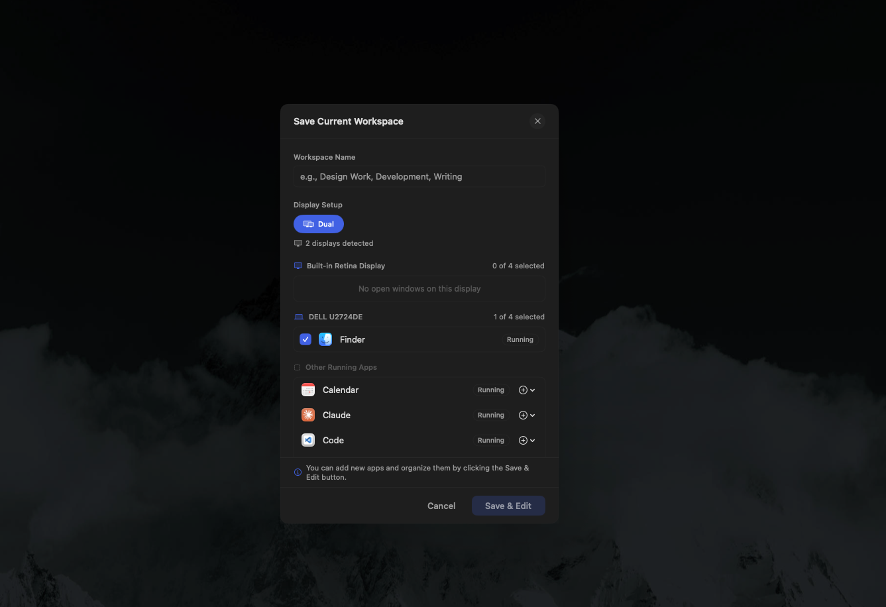
Every other open app is listed under Other Running Apps. Click the + button next to an app and a small menu appears asking which display it should go to. Here, the Code editor is being sent to the DELL monitor.
Next: do the same for as many apps as you like — each display holds up to 4 apps.
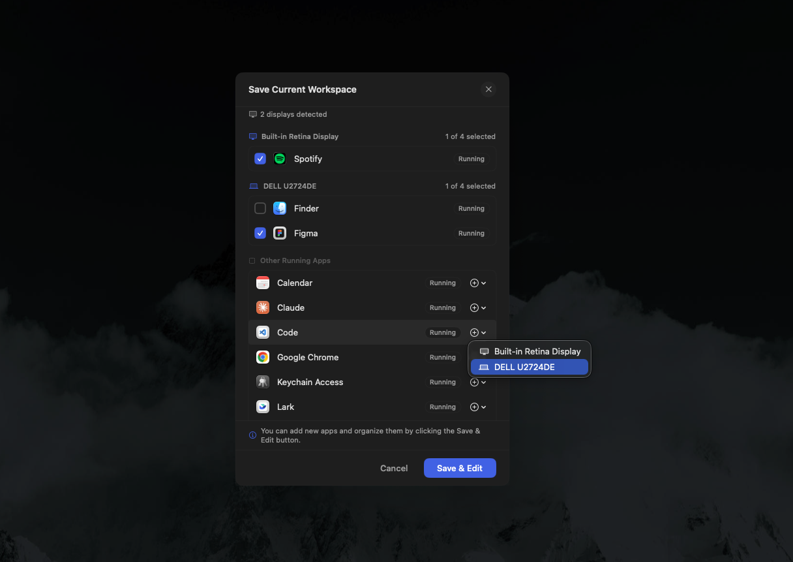
Keep going until everything is where you want it — for example Spotify on the MacBook screen, and Figma plus Google Chrome on the external monitor. The counters next to each display show how many slots are used. When you're happy, click Save & Edit.
Next: the workspace editor opens so you can fine-tune the layout.
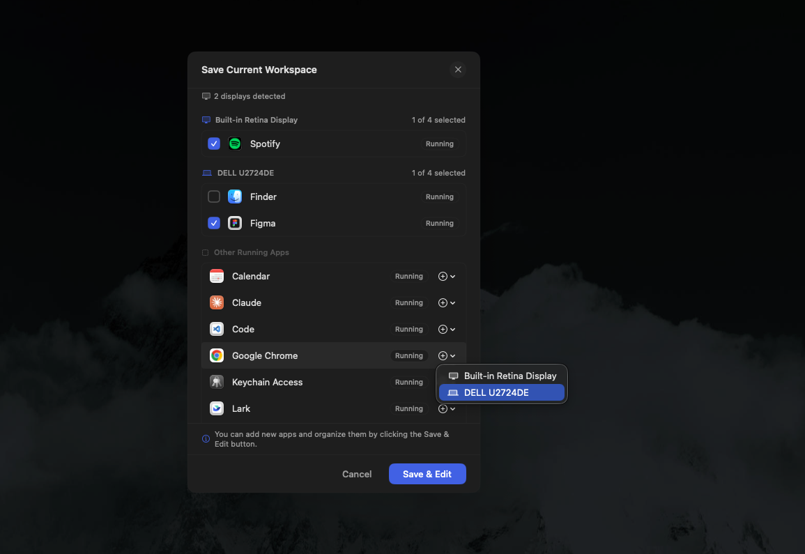
The editor shows one column per display, with up to 4 app slots each. You can rename the workspace, drag apps between slots, use the swap button to move apps across displays, or click any empty Add App tile to add more. Green dots show which apps are currently running.
Next: try Add App to see how easy it is to grow a workspace.
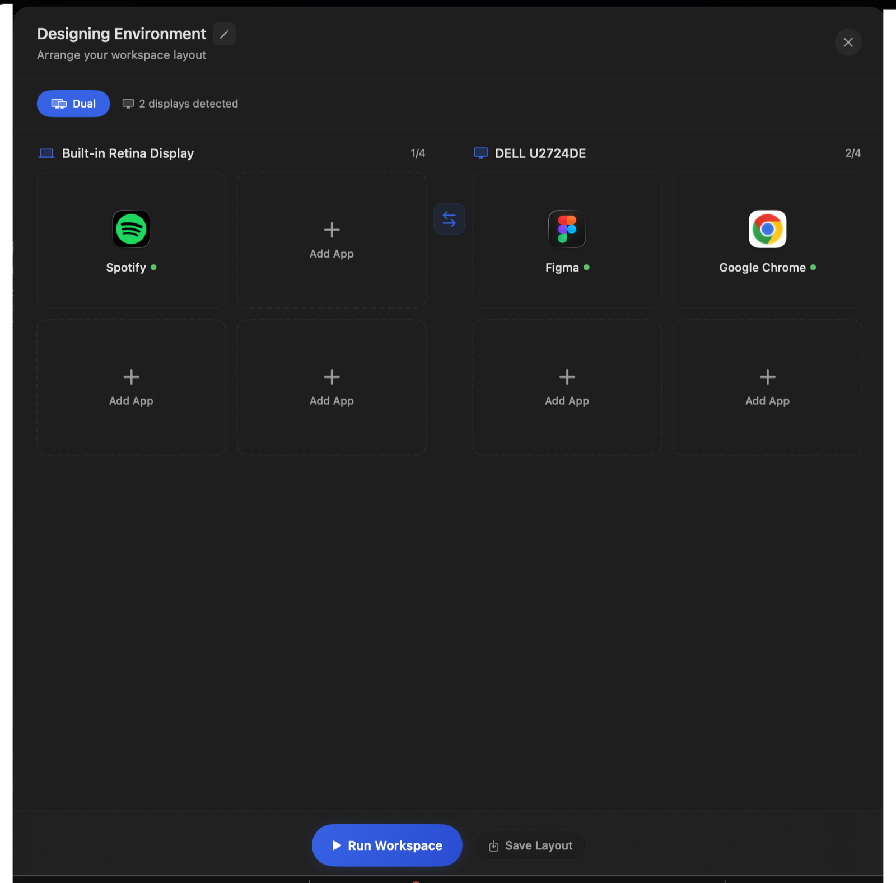
The Add App search finds apps that are currently running and everything installed on your Mac. Type a few letters, click the app, and it fills the slot. Apps don't need to be open — Ordesk will launch them for you when you run the workspace.
Next: hit Run Workspace and watch it come together.
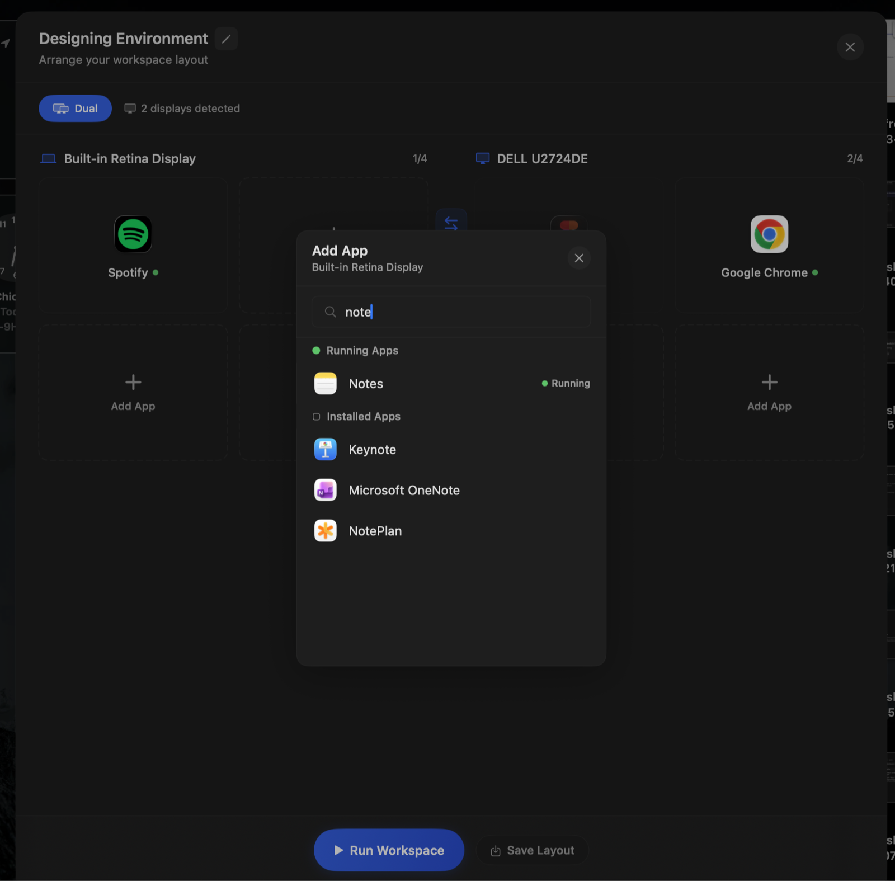
When you click Run Workspace, Ordesk checks whether other apps are open that aren't part of this workspace. It offers to minimize them for a cleaner desktop, or you can run without minimizing. Pick Minimize & Run for the tidiest result.
Next: your apps launch and snap into position — automatically.
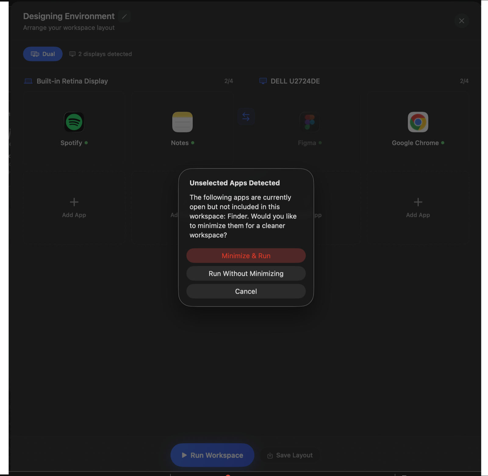
Ordesk launches every app in the workspace and arranges the windows for you. With two apps on a display they sit neatly side by side — here Spotify and Notes share the MacBook screen with no overlapping and no manual dragging.
Meanwhile, the same thing happens on your second display…
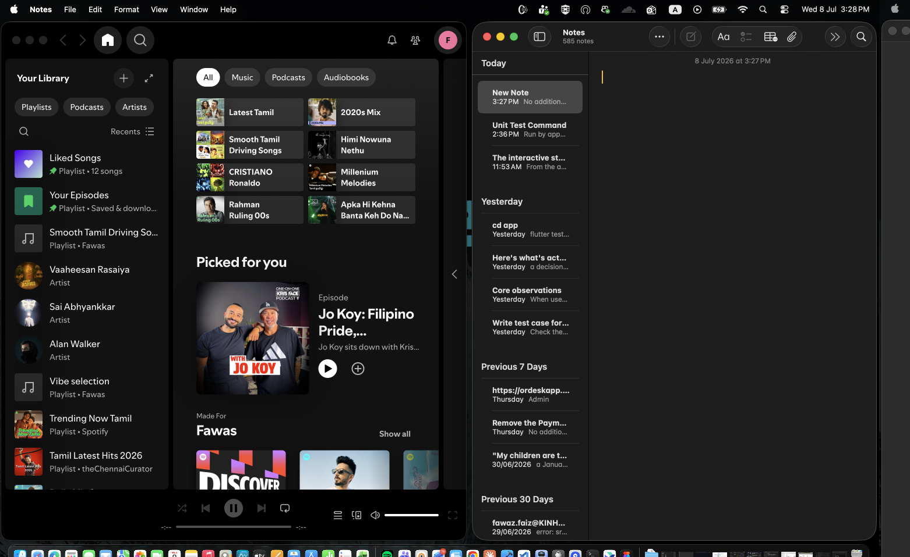
At the same moment, the external monitor gets its own layout — Figma on the left, Google Chrome on the right. One click set up both screens exactly the way you saved them. Switching projects now takes seconds instead of minutes.
Done working? Ordesk can clear everything just as fast.
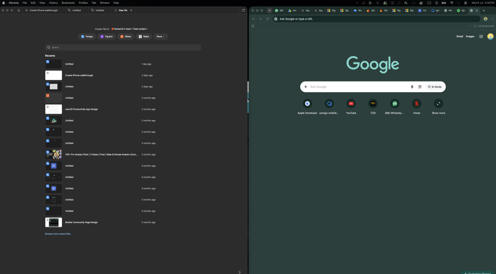
The Clear Workspace action minimizes — or force quits — every visible app. You choose the scope: all displays at once, or just one screen. Perfect for instantly cleaning up before a meeting or a screen share.
Next: make Ordesk fit your habits in Settings.
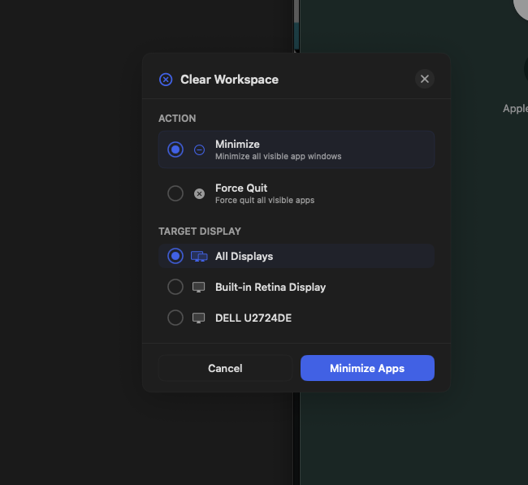
In Settings → General you can start Ordesk at login, always minimize other apps when running a workspace, set the gap between tiled windows, and adjust how quickly apps launch one after another.
Next: one last stop — permissions and safety options.
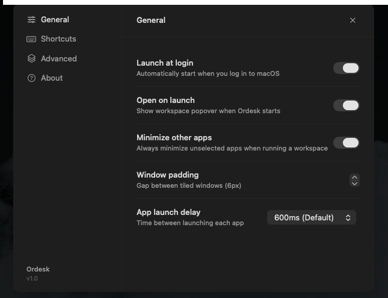
Ordesk needs just one macOS permission — Accessibility — to detect, position, and minimize windows. The Advanced tab shows its status at a glance, lets you ask for confirmation before clearing, and keeps reset options tucked safely in a danger zone.
That's it — you're ready. Download Ordesk below and save your first workspace.
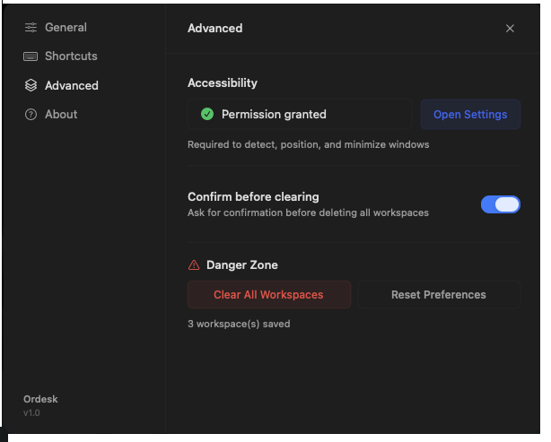
Whether you use one display or six, Ordesk adapts to how you work.
Manage IDEs, terminals, browsers, and documentation across multiple monitors without losing context.
Switch between design tools, preview screens, and reference boards instantly.
Separate client projects with dedicated workspaces. Jump between contexts without the setup time.
Download Ordesk for free and start saving workspaces today. Available for macOS 14 and later.